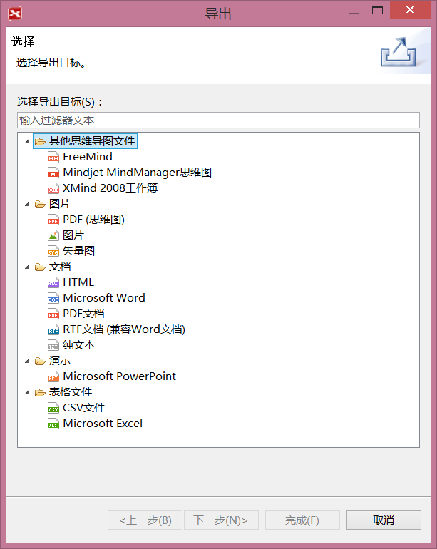
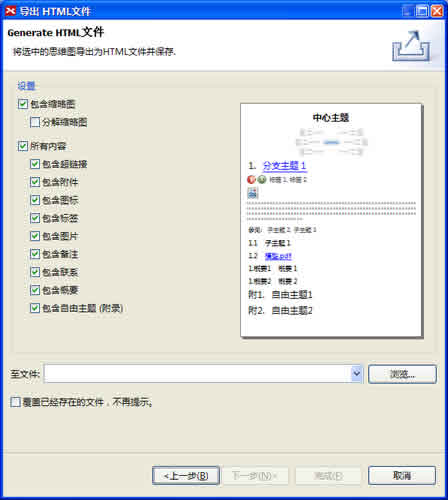
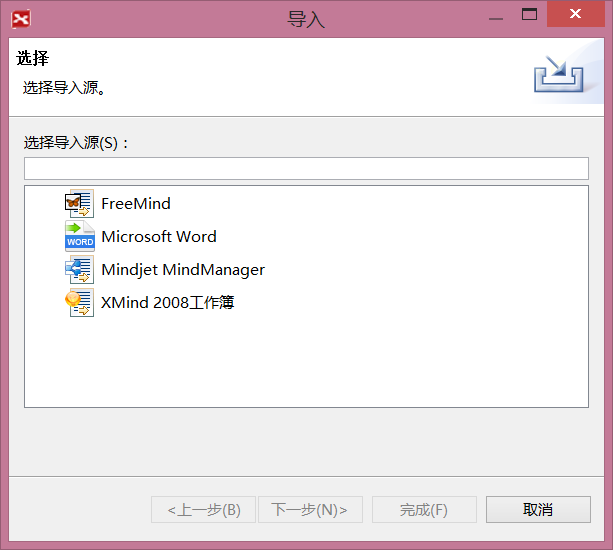

导出
XMIND支持多种格式的导出，例如TXT，HTML以及JPEG和PNG格式的单张或者多张图片等等。方法如下：
导出对话框

按照下列步骤将思维图导出成TXT文件：
- 在菜单栏选择“文件 > 导出”；
- 在导出对话框中选择“纯文本文件”；
- 点击“下一步”；
- 设置文件保存地址；
- 点击“完成”结束。
按照下列步骤导出HTML文件：
- 在菜单栏选择“文件 > 导出”
- 在导出对话框中选择HTML；
- 点击“下一步”；
- 选择文件保存位置；
- 在预览对话框中设定是否需要：缩略图、备注、自由主题、标签、图标、图片、联系以及超链接等等；
- 点击“完成”结束。

按照下列步骤导出图片：
- 在菜单栏选择“文件 > 导出”；
- 选择“单张图片”
- 点击“下一步”；
-
在导出对话框中进行下列设定：
- 导出的文件名称和位置。
- 图片的文件格式。
- 点击“完成”结束。
导入
您可以直接导入FreeMind以及MindManager文件至XMIND中打开，然后编辑。步骤很简单，如下：
按照下列步骤导入FreeMind文件：
- 在菜单栏选择“文件 > 导入”；
- 选择“FreeMind 0.8/0.9”，点击“下一步”；
- 选择需要导入的文件；
- 点击“完成”结束整个过程。
按照下列步骤导入MindManager文件：
- 在菜单栏选择“文件 > 导入”；
- 选择“MindManger 5/6/7”，点击“下一步”；
- 选择需要导入的文件；
- 点击“完成”结束整个过程。
选择文件类型

您可能还对下列内容感兴趣…